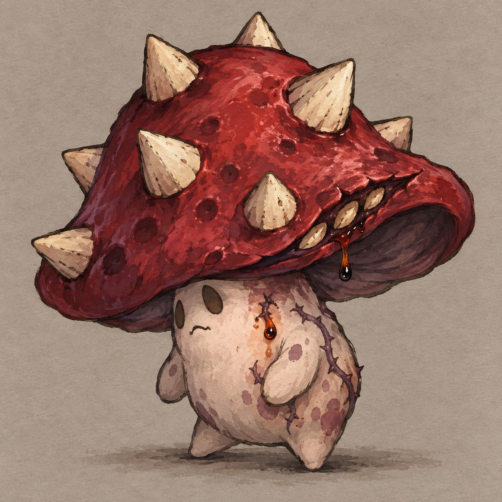
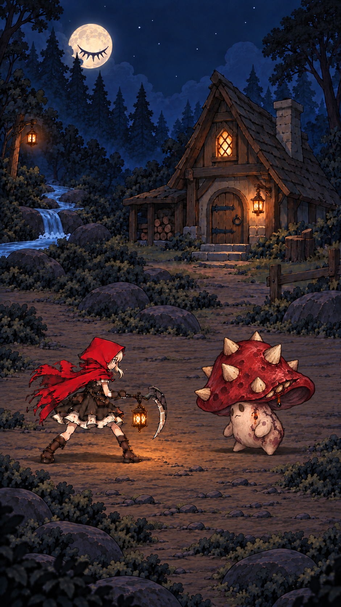
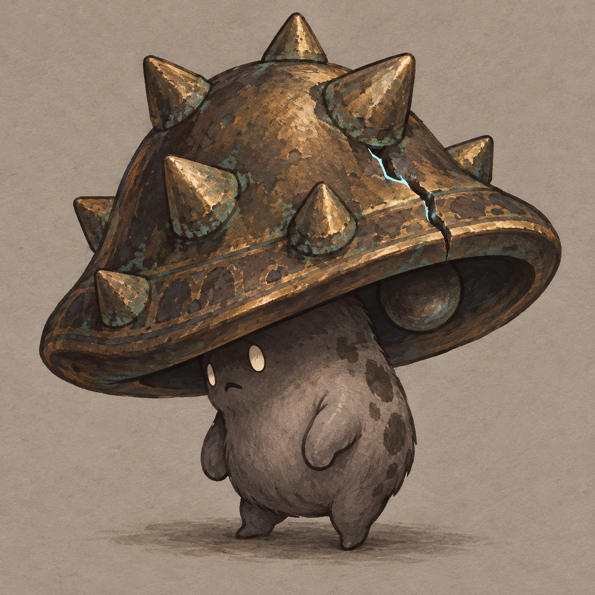
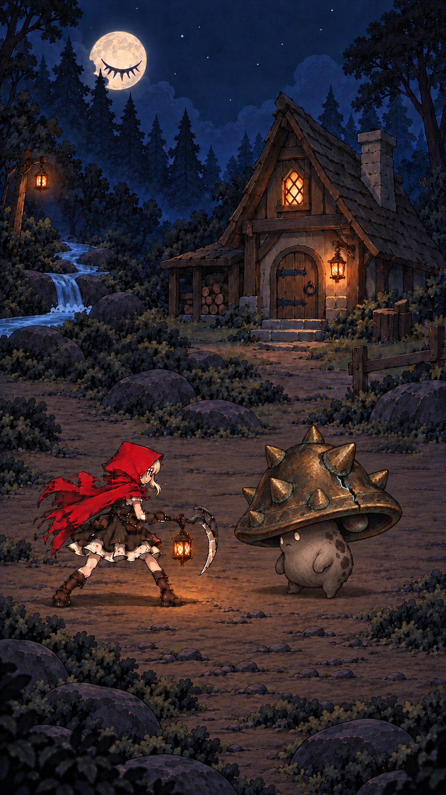
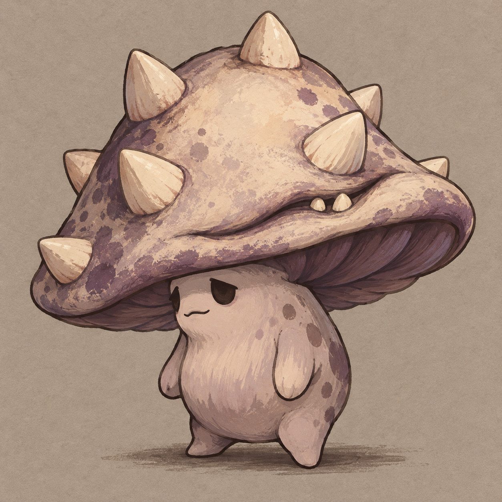
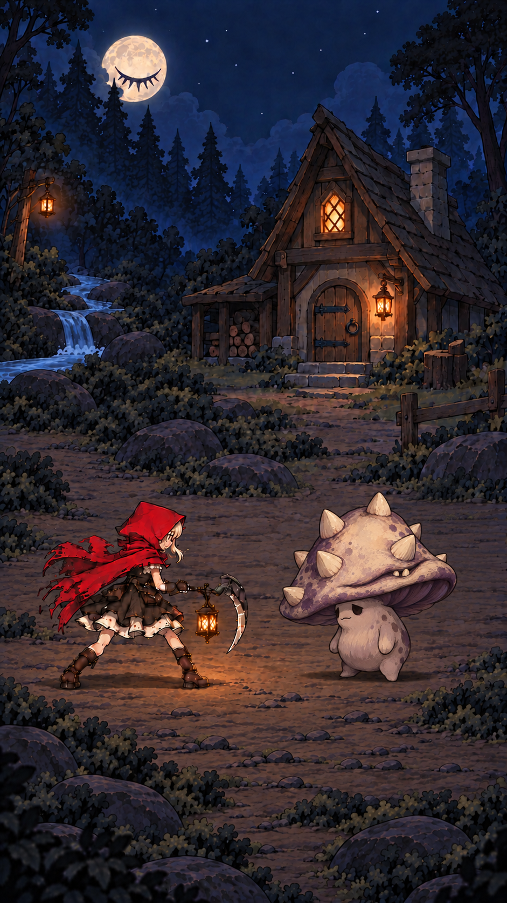

A · 荆棘莓童
深红莓果皮、浅色刺籽、淡粉果髓身体；帽缘裂口像藏起来的笑容，荆棘疤痕渗出深色果汁。圆肚与担忧表情保留可爱感。

战斗概念 · 9:16

角色图 + 节点 4 战斗概念图。尚未选择，未导入 Unity。点击图片查看原图。
深红莓果皮、浅色刺籽、淡粉果髓身体；帽缘裂口像藏起来的笑容，荆棘疤痕渗出深色果汁。圆肚与担忧表情保留可爱感。


旧铜钟帽、铜绿、炭灰身体；裂缝透冷光，帽下露出短钟舌。沉重帽盖与怯生生的体态形成反差。


乳白菌帽、灰紫褶皱与身体；尖刺像乳牙，帽缘闭合唇缝露出两颗小牙。困倦表情让异常保持克制。

